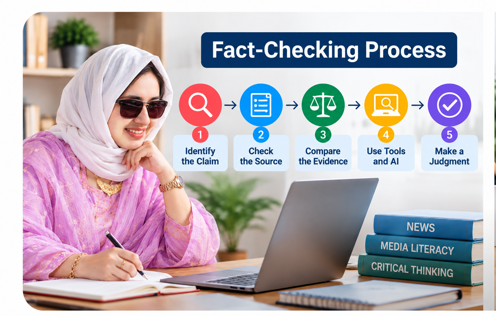

Pause before reacting
Notice emotional language, urgency, outrage, or a request to share immediately. Slow down before liking, reposting, or repeating the claim.
Learn
Use this sequence when you encounter a suspicious claim online. The goal is not to “win” an argument; it is to understand what is known, what is uncertain, and what evidence supports the conclusion.

Notice emotional language, urgency, outrage, or a request to share immediately. Slow down before liking, reposting, or repeating the claim.
Ask who first published the claim. Open the original article, study, speech, post, dataset, or video whenever possible instead of relying on a screenshot or repost.
Look for named sources, documents, data, dates, methodology, quotations, and context. Ask whether the evidence actually supports the headline or conclusion.
Search for the same claim in multiple credible sources. Agreement across independent reporting and primary records is stronger than repetition across copied posts.
Ask AI to suggest search terms, identify questions, summarize a source you provide, or help organize evidence. Do not treat an AI response as proof. Follow links, verify quotations, and check the original material yourself.
Claim: “A viral image proves that a university has banned all student use of AI tools.”
AI-assisted fact-checking
These prompts ask AI to support your investigation without outsourcing the final judgment.
“Rewrite this claim as one precise, checkable statement. Do not decide whether it is true.”
“What primary sources, records, datasets, or expert sources would be most useful for verifying this claim?”
“Give me five neutral search queries to investigate this claim from multiple perspectives.”
“Here are the sources I found. Compare what each source actually supports and identify any gaps or contradictions. Do not invent missing facts.”